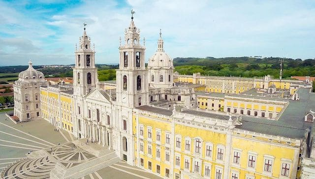
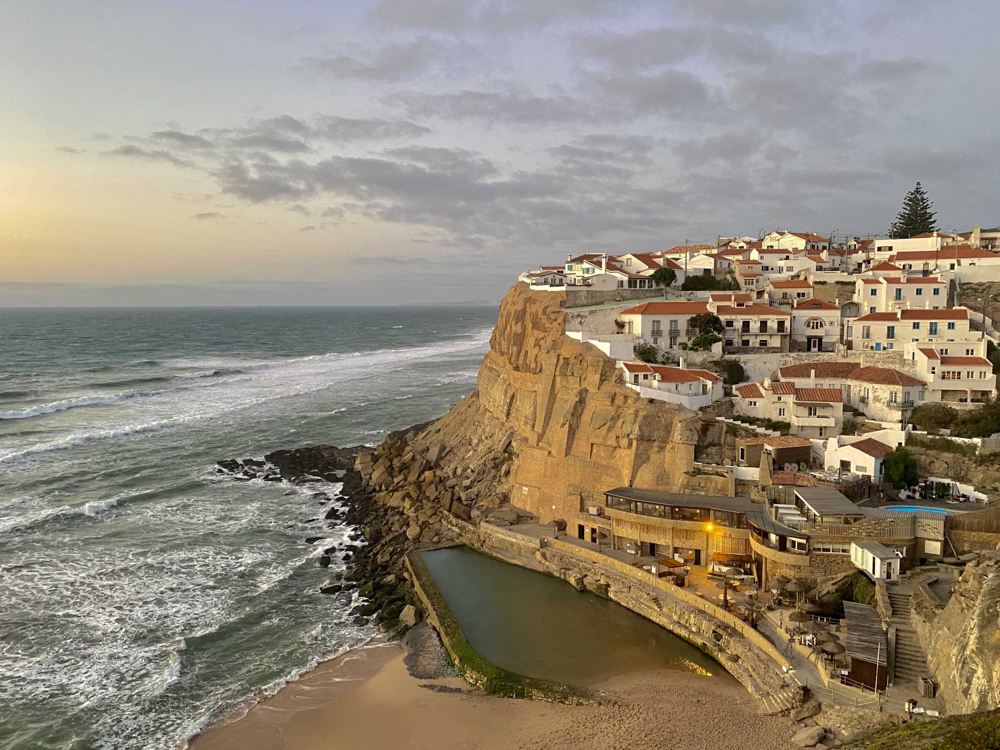
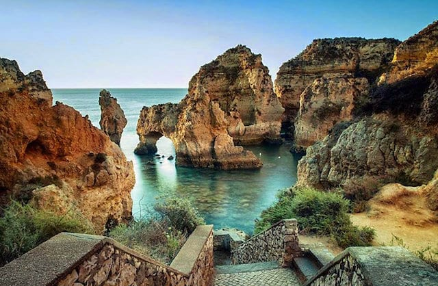

A Torre de Belém está localizada na freguesia de Belém, mais especificamente na Avenida Brasília, na cidade de Lisboa, capital de Portugal.
Funcionamento:
A Torre de Belém funciona de terça a domingo das 9h30 às 18h00. O último horário para a venda de bilhetes é às 17h. Já a última entrada para a atração é às 17h30.
Além das segundas, o local é fechado nos dias 1 de janeiro, 1 de maio, no Domingo de Páscoa, no dia 13 de junho, e no natal, 25 de dezembro.
Visita:
Na parte externa do monumento, é possível apreciar os detalhes da obra arquitetônica produzida em estilo manuelino.
A fachada possui vários símbolos importantes, como a imagem de São Vicente, padroeiro de Lisboa, e a imagem de São Miguel, o anjo da guarda de Portugal.
Também há muitos brasões que são símbolos do país e a famosa escultura de rinoceronte, presente dado ao rei D. Manuel I pelo rei de Cambaia, em 1514.
Já no interior da construção, você encontrará canhões em exposições e paióis (depósito de munições, explosivos, mantimentos), que serviram de masmorra para os prisioneiros.
A torre conta com um total de 5 pavimentos: a Sala do Governador, a Sala dos Reis, a Capela, a Sala de Audiências e o Terraço.

Palácio Nacional de Mafra, Lisboa
Localização:
Área Metropolitana de Lisboa, o Município de Mafra dispõe de 11 freguesias dispersas por uma área territorial de 291,65 km², sendo limitado a norte pelo município de Torres Vedras, a nordeste por Sobral de Monte Agraço, a leste por Arruda dos Vinhos

Cabo da Roca e Azenhas do Mar, Sintra
Localização:
O Cabo da Roca fica em Colares, localizado a 17km do centro histórico de Sintra, a 15km de Cascais e a cerca de 40km de Lisboa. Portanto é bem pertinho, seja de carro alugado, seja de transporte público.

Praia da Ponta da Piedade, Algarve
Localização:
Situada a 2km de Lagos, na Costa d’Oiro, e repleta de grutas, baías desconhecidas e praias tranquilas, a Ponta da Piedade é particularmente atraente quando vista a partir do mar.